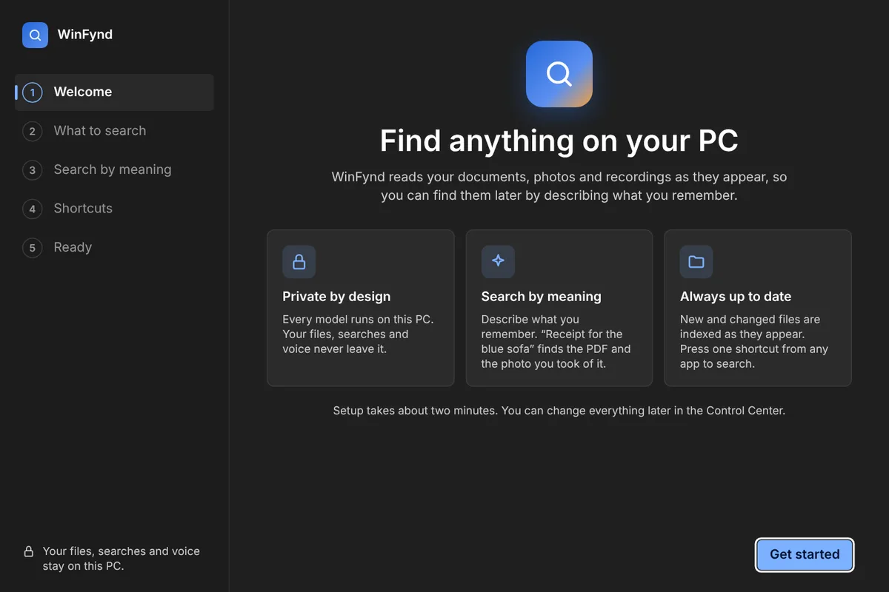
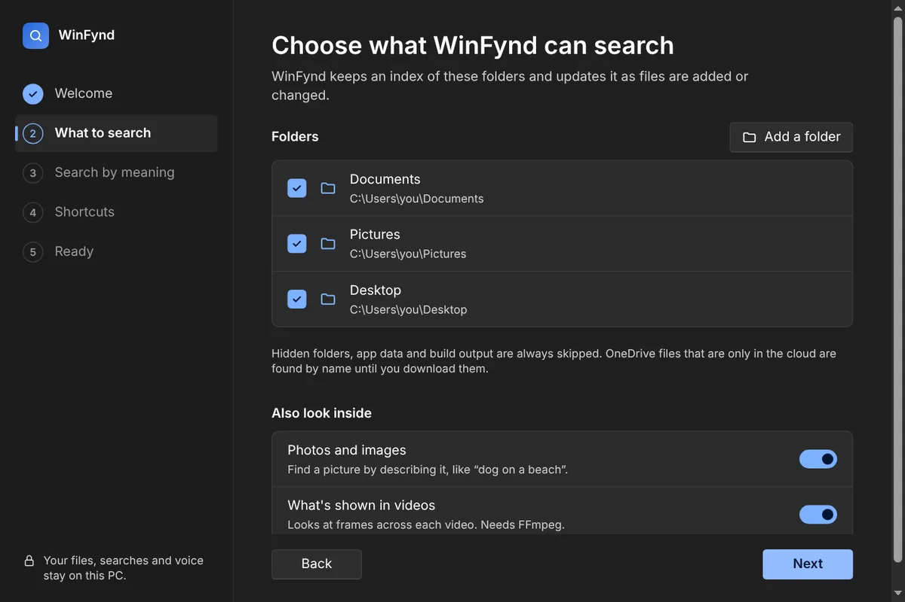
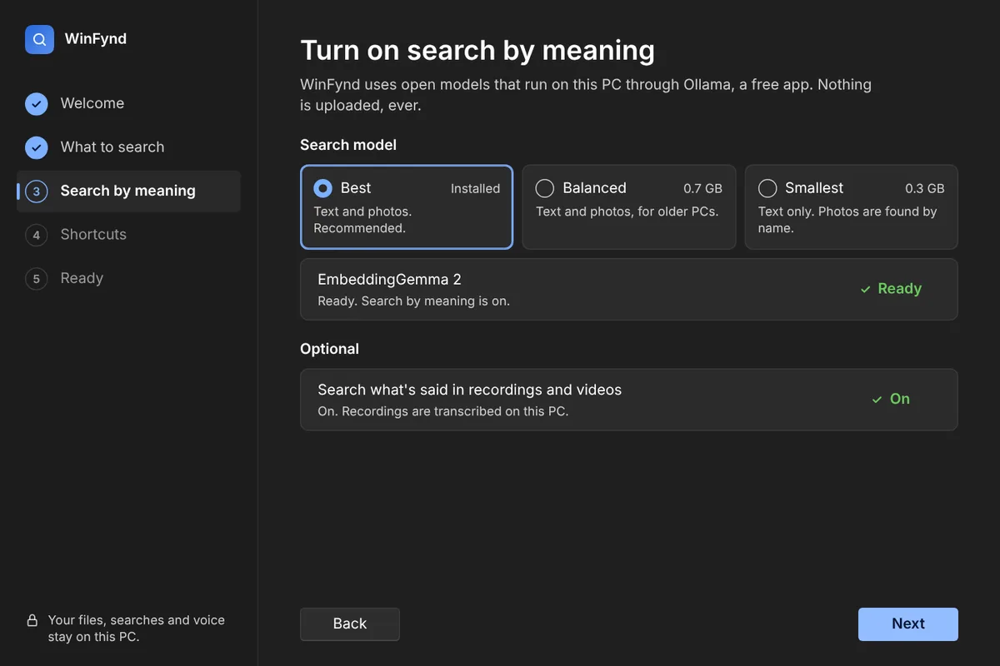
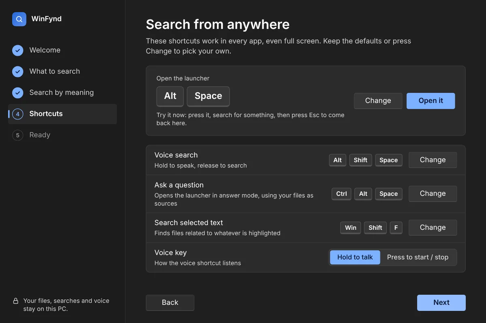
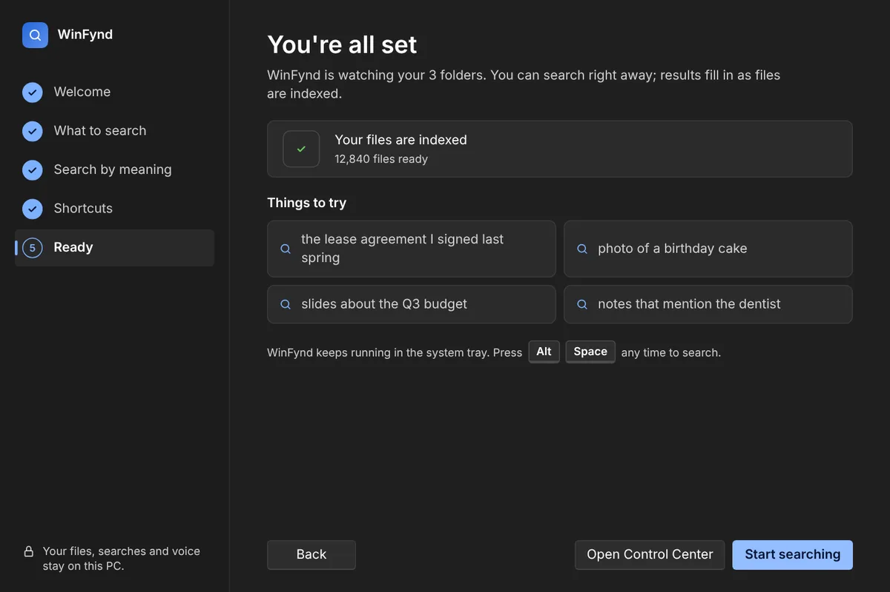

Ask your PC for the sofa receipt. that beach photo. the budget call. your lease date. the cabin Wi-Fi.
WinFynd indexes documents, photos, recordings and video the moment they land, then finds them from a description. On-device AI, no cloud, no account.
AltSpace from any app. Windows 10 and 11.
Searchable the moment it lands.
Save a PDF, drop photos off your phone, finish a Teams call. WinFynd hears about it from Windows, reads it, and has it in your results seconds later. Files that haven't changed are never read twice.
Detected
Windows change notifications flag every save, download and sync. No polling, no battery drain.
ReadDirectoryChangesWRead
Text with page and slide labels, the pixels of photos and video frames, and speech transcribed by Whisper.
~450-character passagesUnderstood
EmbeddingGemma 2 places words and images in one space, so a sentence can match a photograph.
768-dimension vectors, on your GPU or CPUSearchable
Ranking blends meaning with exact-word full-text search, then explains each match.
SQLite + FTS5, stored in your profileText, pixels and sound in one index.
Every result tells you why it matched and opens at the right spot: the page, the slide, the second a sentence was spoken, the frame a dog ran across.
Private by architecture.
WinFynd has no servers to send your data to. During search, the only connection it makes is to Ollama on 127.0.0.1.
- No account, no telemetryNothing to sign in to, and no usage data collected.
- Your index is a file you ownOne SQLite database in your Windows profile. Delete it and it's gone.
- Works with the network offModels download once, when you choose them. Then it runs offline.
Built for the keyboard.
Global hotkeys work over any app, even full screen. Rebind any of them during setup or in the Control Center.
Search
Opens the launcher over whatever you're doing. Esc puts it away.
Ask
Answers questions from your own files, with numbered sources you can open.
Search the selection
Highlight text in any app and find every file related to it.
Voice
Hold to talk or tap to toggle. Speech is processed on your PC.
Two minutes from install to first search.
This is the welcome window WinFynd opens on first run. It sets up everything above, then gets out of the way.
- 1
Welcome
What WinFynd does with your files, and what it never does.
- 2
What to search
Documents, Desktop, Downloads and Pictures come pre-selected. Add folders, or switch off photos and video.
- 3
Search by meaning
Detects Ollama, then downloads EmbeddingGemma 2 in the size that suits your PC.
- 4
Shortcuts
Try Alt+Space on the spot, or record your own combination.
- 5
Ready
Search right away while indexing finishes in the background.





The details.
Only to download models the first time. Indexing, search and answers all run on your PC, and WinFynd keeps working with Wi-Fi off.
Ollama is a free, open-source runtime for AI models on your own hardware. WinFynd uses it to run EmbeddingGemma 2 for search and any chat model you pick for answers. Without it, WinFynd still finds files by exact words and names.
It depends on how much you have. Documents and photos go first, so search is useful within minutes. Recordings and videos are transcribed last because they take the longest. After that, only new or changed files are read.
Yes. Downloaded files are indexed in full. Cloud-only files are found by name until you open them, so WinFynd never pulls gigabytes from OneDrive on its own.
EmbeddingGemma 2 is 1.3 GB, or 0.7 GB and 0.3 GB for the lighter variants. Whisper adds 150 to 575 MB if you search recordings.
Give your PC a memory.
Free and open source. Install it, pick your folders, and search while it indexes.
Windows 10/11 · 64-bit · 8 GB RAM recommended · Ollama